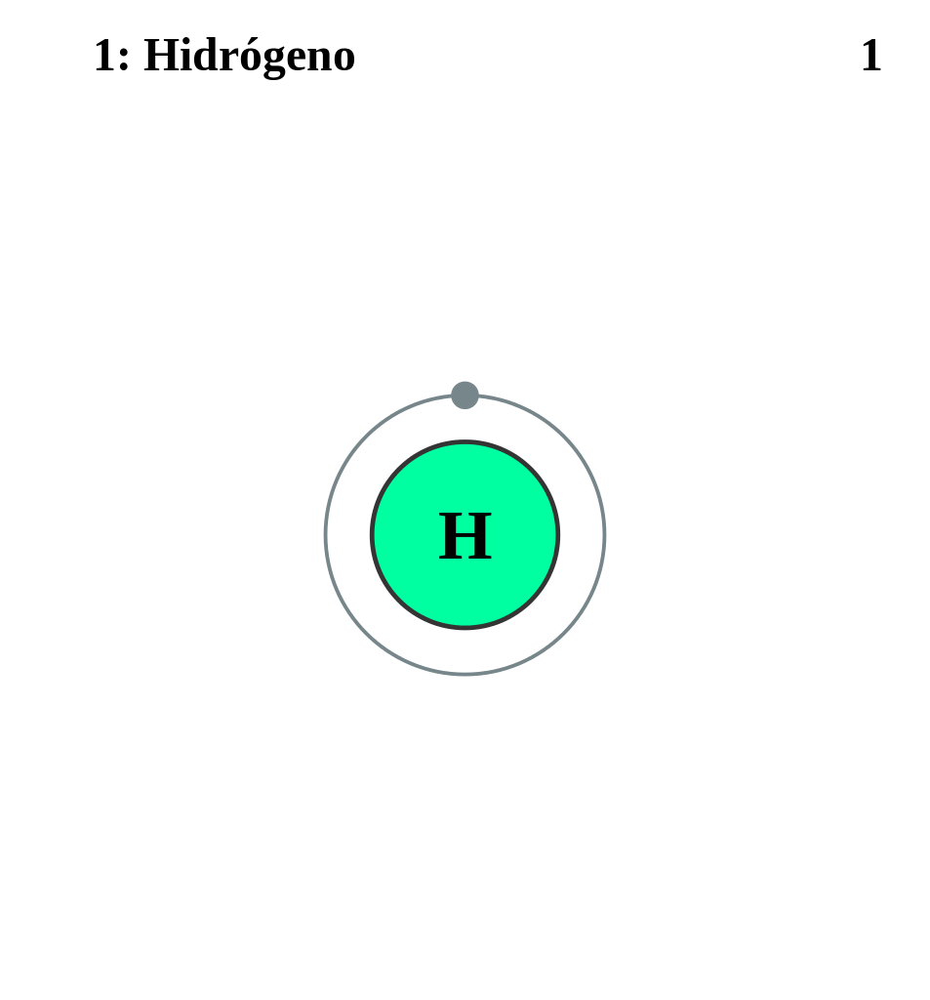

|
HIDRÓGENO
Es el elemento químico más ligero que existe, su átomo está formado por un protón y un electrón y es estable en forma de molécula diatómica (H2).
En condiciones normales se encuentra en estado gaseoso, y es insípido, incoloro e inodoro.
Sus usos industriales incluyen hidrogenación (grasas y aceites), producción de metanol, hidrodealquilación, fraccionamiento hidráulico e hidrodesulfuración. También se usa como combustible para cohetes, para soldar, fabricar ácido clorhídrico, reducir menas de metales e inflar globos.
|
 |
DATOS
Número Atómico: 1
Peso Atómico: 1.008
Electronegatividad: 2.2
Configuración Electrónica: 1s1
Estados de Oxidación: ±1
No. de Electrones de Valencia: 1
|